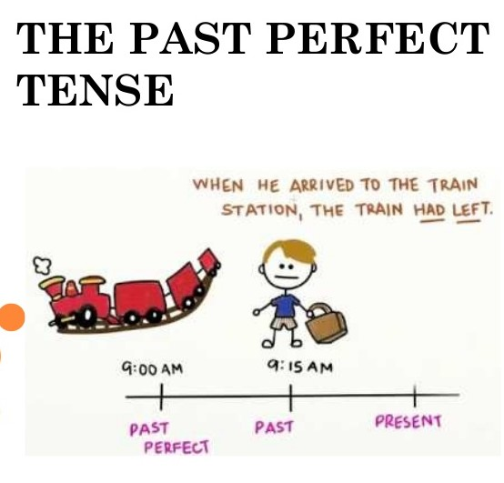

<!-- We don't need full layout here, because this page will be parsed with Ajax-->
<!-- Top Navbar-->

<div class="pages">
  <!-- Page, data-page contains page name-->
  <div data-page="about" class="page">
    <!-- Scrollable page content-->
    <div class="page-content">
      <div class="navbar">
  <div class="navbar-inner">
    <div class="left"><a href="#" class="back link"> <i class="icon icon-back"></i><span>Back</span></a></div>
    <div class="center sliding">Past Perfect</div>
    <div class="right">
      <!-- Right link contains only icon - additional "icon-only" class--><a href="#" class="link icon-only open-panel"> <i class="icon icon-bars"></i></a>
    </div>
  </div>
</div>
      <div class="content-block presentcon">
    
    <div class="row no-gutter">
        <div class="col-100">



        </div>
    </div>
We use the past perfect simple to talk about what happened before a point in the past. It looks back from a point in the past to further in the past.
<h2>Examples</h2>

<ul>
<li>I hadn't known the bad news when I spoke to him.</li>
<li>I checked with the supplier and they still hadn't received the contract.</li>
<li>She had already told him before I got a chance to give him my version.</li>
<li>The company has started the year well but was badly hit by the postal strike.</li>

</ul>

      </div>
    </div>
  </div>
</div>